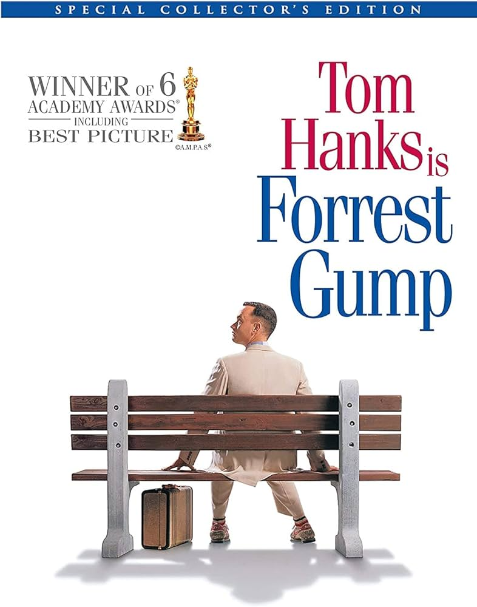

Director: Robert Zemeckis
Forrest Gump is a 1994 American comedy-drama film directed by Robert Zemeckis and written by Eric Roth. It is based on the 1986 novel of the same name by Winston Groom and stars Tom Hanks, Robin Wright, Gary Sinise, Mykelti Williamson and Sally Field. The film follows several decades in the life of a slow-witted yet kindhearted Alabama man named Forrest Gump (Hanks) and his experiences in the 20th-century United States. The film differs substantially from the novel.